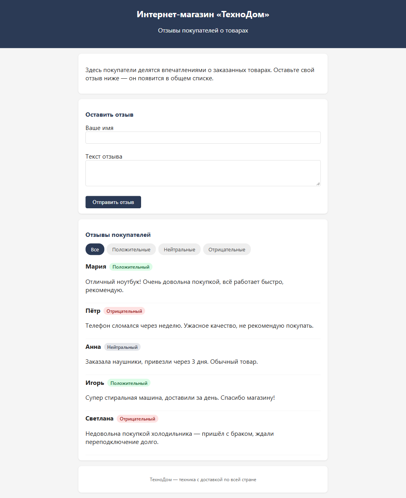
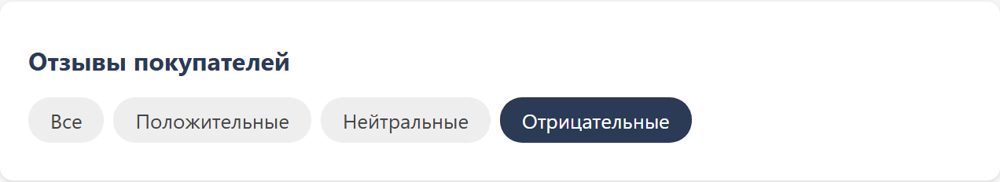
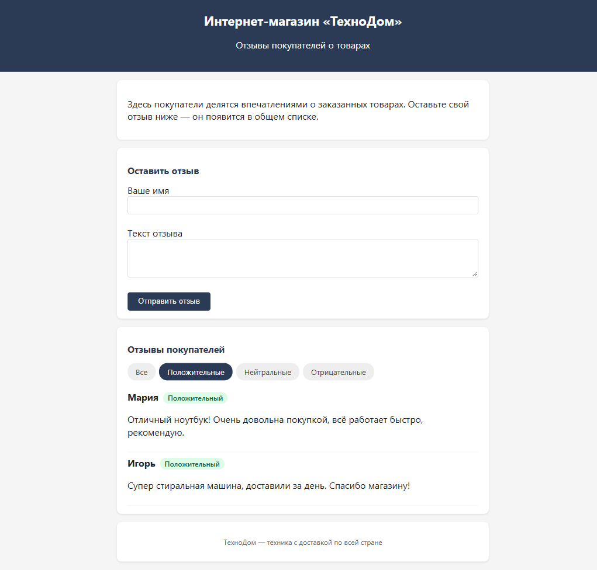

Кейс проекта
Онлайн-магазин отзывов с ИИ-анализом тональности и фильтрацией
Открыть проект →Добавить в форму отзывов интернет-магазина функцию определения тональности текста — чтобы менеджер сразу видел настроение покупателя, не читая каждый отзыв целиком, и мог быстрее реагировать на негатив.
Менеджеры по работе с клиентами в интернет-магазине «ТехноДом», которые ежедневно обрабатывают десятки отзывов и должны в первую очередь выявлять недовольных покупателей.
Все отзывы выглядят одинаково в общем списке — без визуального индикатора менеджер тратит время на чтение каждого текста, чтобы понять, доволен покупатель или нет. Негативные отзывы теряются среди позитивных и требуют долгого поиска.
Клиентская эвристика по ключевым словам с учётом отрицаний — текст каждого нового отзыва анализируется мгновенно, рядом с именем покупателя появляется цветная метка: зелёная (положительный), серая (нейтральный) или красная (отрицательный).
Добавление отзыва в 2 клика. Определение тональности текста эвристикой (точность — 100% на тестовой выборке из 8 кейсов). Цветные метки рядом с каждым отзывом. Фильтрация списка по тональности: все / положительные / нейтральные / отрицательные. Сохранение отзывов между сессиями.
HTML5, CSS3, vanilla JavaScript — без библиотек и сборки. localStorage для хранения данных. Claude Code для написания и отладки кода. GitHub Pages для публикации.
Рабочее приложение: менеджер сразу видит цветовые индикаторы у каждого отзыва и может одним кликом отфильтровать только негативные — для срочной обработки. Проект опубликован на GitHub, доступен для просмотра.



Хотите такой же результат для своей задачи?
Связаться со мной